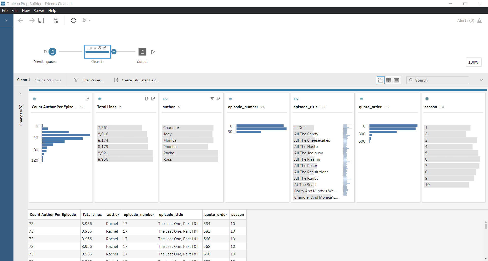
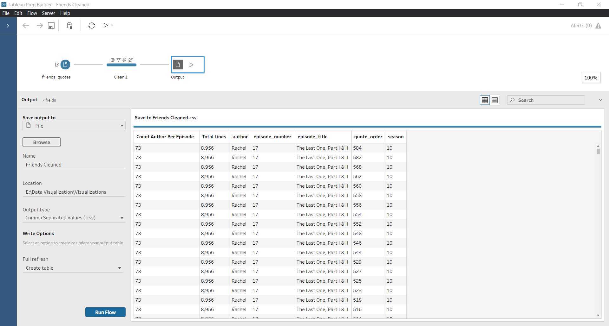
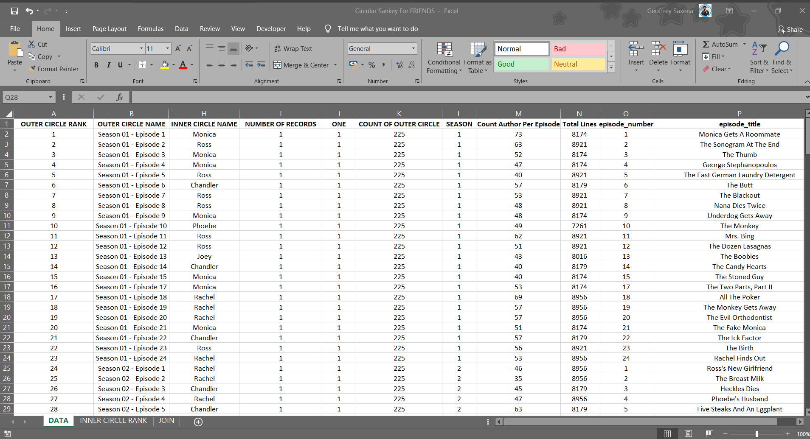
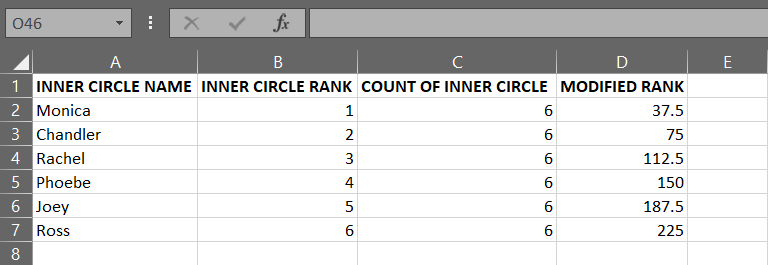
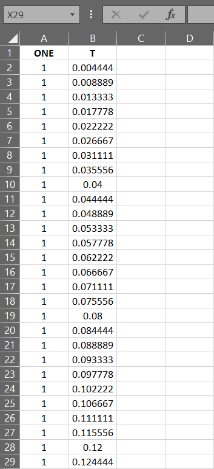
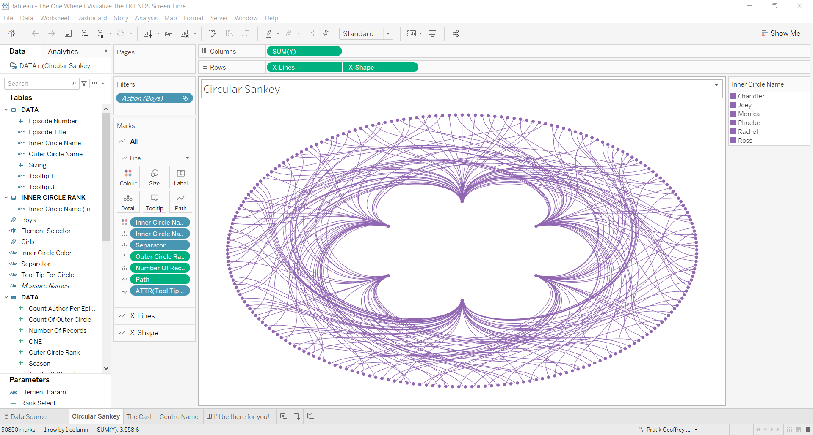

This blog heavily borrows the Circular Sankey concept from CJ Mayes.
CJ Mayes has been a huge inspiration for all my visualizations, and I’ve learned a lot from his vizzes. You can find his blog here and his website!
To start things off, I picked up the dataset from Kaggle.
Since this had a lot of noise to it, I decided to prep the data on Tableau Prep, I don’t have a lot of idea about Tableau Prep but in the end, I was able to achieve the dataset I desired.
Here’s the entire flow once it’s done:

We start off by removing all the actors except Rachel, Ross, Chandler, Monica, Phoebe & Joey. These also exist in all lower-case so we’ll merge them with the ones in proper case.
We’ll then drop all the unwanted columns, finally, our cleaned dataset set should look something like this:

This is all that we’re going to do on Tableau Prep.
Now our dataset has to be in a particular format, to make a circular Sankey. I’m not going to write it down here as CJ already has a blog and a template, and I’d recommend using those.
Once you’ve downloaded the template and prepped your data, your excel sheet should look something like this.



You can then create the calculations, and if everything goes right, you should get something like this:

Format & customize your dashboard, and then you can make something like this: